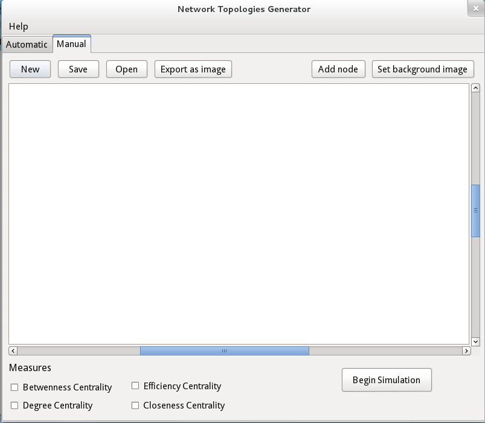
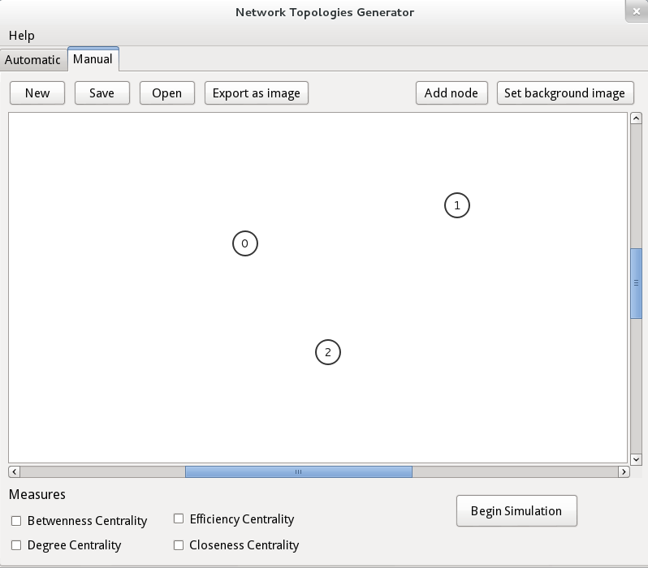

Automatic Topology Generation
This is Network Topologies Generator, a tool with the objective to assist network architects in creating new survivor topologies.
It is designed specifically for optical telecommunication networks, and is based on a paper by Claunir Pavan, entitled Generating Realistic Optical Transport Network Topologies published on IEEE in 2010 [1].

On the next sections, we'll explain each of the interface's sections and their options in more detail.
Network
The network section allows you to configure some characteristics of the graph that represents the network. You can set the number of nodes, the minimum and maximum degree of each node (note that on OTNs the minimum degree is greater or equal to 2), the average maximum degree of the network and the minimum distance of each pair of nodes.

Be aware of the minimum distance between nodes, not to block the distribution of nodes on the regions.
 This is because blocks the area around the nodes, and this could make impossible to distribute all the nodes on the plane because de of the limited area.
This is because blocks the area around the nodes, and this could make impossible to distribute all the nodes on the plane because de of the limited area.
The average maximum degree of the network must follow the properties of the graph, where the node degree is N-1, where N is the number of nodes of the network.
Plane
The plane represent the area on which the nodes will be distributed. The plane is a square matrix where the square root of the area must be between 2N and N².
The routing between nodes inside region uses the Waxman probability to determine the links that will happen or not. The Waxman probability makes use of two variables, alpha and beta, ranging from 0 to 1.
The distribution of the nodes can be uniform or random. On the uniform distribution, all regions have the same number of nodes. However, as the number of regions is greater than the number of nodes, there will be same empty regions. Also, if the number of nodes is odd the distribution will not be perfectly equal.
On the random distribution, will do as the name suggests: it will distribute the nodes not following any pattern and as such, some regions will have more nodes than others, and some may have none.
Regions
The subdivision of the plane in regions can be fixed regions or flexible regions. On the former, the plane will be divided in R equal regions; and on the latter, you can enter the Length and the Breadth of the plane ( Length * Breadth = sqrt(R) ), so there are several options to divide the sqrt(R) into different types of rectangular dimensions.

Also there is an option to say the number of simulations.
Measures
With the generated topologies you can choose to calculate some centrality measures on each one.

Output
The default output is text file and if you check any of the measures a xls file will be created. Both of them will be located on the folder indicated on a message when the simulation finishes.
The text file contains the topologies generated. The first part are the xy coordinates of the nodes on the plane. Next, are the generated topologies; each row represents a link. The first and second column are the nodes' indices, and the third column is euclian distance between them.
On the xls file, you'll find the values of the centrality measures of each node.
Also, for each topology generated, a SVG file is created, which is a vector image format. At the end of all simulations, all topologies are displayed as image in a new window.

Manual Topology Geration
Aside from automatically generating topologies, it's possible to manually design the topology and check its survivability and apply some measures on it.
To access the manual generation, click on the "Manual" tab, as you can see in the image below.

To create a node, first you need to click on the "Node" button on the right and then click on the desired position. If you want to create more nodes, you will need to click the "Node" button before adding each one.
To create a link, first you need to click on a node then click on another node. By default all links have distance 1 (one).

To enter the distance of a link, double click the link and a pop-up will show, allowing you to enter the value. NOTE: the distance must be entered as an integer value.

It's also possible to add a background image to the topology. To do so, click on the "Image" button and a dialog will open for you to select the image.

If you wish to save the topology as an image file click on the "Save" button, this will open a dialog to select the location and the file name. The file will be saved in the SVG format.
To reset everthing click on the "New" button, this will remove all nodes, links and the background image.
After you design the topology you can (optionally) choose to calculate some centrality measures. Clicking on the "Begin Simulation" button, will check the syrvivability of the topology, and if any measures were selected, it will apply them.
After the simulation runs, an output file will be created at the path indicated if you choose any measures. No SVG file will be saved.

Requirements
Currently the ONTGen software only works on the Linux platform.
How to install
To install ONTGen visit the releases page of the project and download the latest version. After downloading, double click the executable to start the installer. Follow the steps until the application is installed, then it should be ready to use.
Technologies
This project is developed in C++ (c++ 11 standard) using the Qt framework version 5 under LGPL license and also uses OGDF version v.2015.05.License
This project is licensed under LGPL.Authors and Contributors
In 2014, Silvana Trindade (@Trindad), and Claunir Pavan (@cleopavan) founded ONTGen.